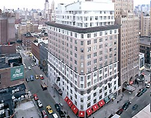

There are two conference hotels for CGO this year, the On-the-Ave Hotel and the Lucerne. To reserve with the preferred rate at the CGO hotel(s), please give the hotel the code listed below. Note that you must be registered for the conference to get the preferred rate. The CGO hotel(s) have WiFi connections for a fee.
If you would like to see where the hotels are located relative to the conference venue, take a look at the Travel Guide.
The reservation deadline (for preferred rates) is February 24, 2005.
The CGO reduced rate (for standard rooms only) is $159 a night. You need to mention "ACM/CGO'06" at the time of reservation. Room availability at reduced rates is limited.
2178 Broadway (at 77th St)The CGO reduced rate (for double rooms only) is $200 a night. You need to mention "ACM-CGO06" at the time of reservation. Room availability at reduced rates is limited.
201 West 79th St.Columbia University is located on the Upper West Side, with convenient access from the number 1 Subway Line (at the 116th street stop on Broadway). The conference reception on Monday night, the business meeting, and the Tuesday excursion to "Spamalot!", will all be in the Times Square area (at the 42nd street and Broadway subway stop). The conference hotel, the "On-the-Ave", splits the difference between the locations, at 77th and Broadway, near the 79th street subway stop.
If you choose not to stay at the conference hotel, a hotel in the Upper West Side (from 59th to 110th street, west of Central Park), or in Midtown (roughly from 34th street to 59th street), will be most convenient for transit purposes. Locations outside of Manhattan (for example, in Jersey City), may have more competitive rates, but will probably involve up to an hour of transit time to and from conference events.
Below is an incomplete list of Other accomodations are available in the area. Note, that at this time, CGO does not have discounted rates available at these locations.